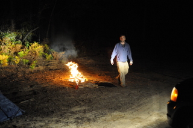
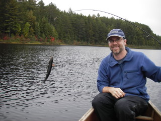
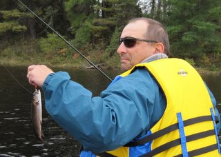
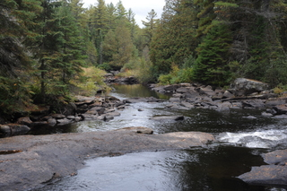
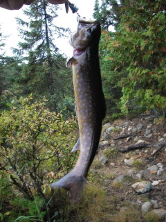
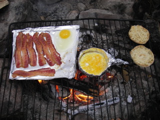

 It's fall, with rain forecast and cold temps, but in the need to go "one more time", Pete and I went to Algonquin and managed to scare up some brookies. Due to scheduling, we left late on Friday night, arrived in the dark at 10 pm. No permit, so we set up on a random back road for the overnight until we could get our permits early the next day. Temps went to -1 C but due to an abundance of wood, we created a monster fire and settled down for some comfortable drinking. Pete brought an assortement of pre-mixed, "easy to consume" stuff that goes down fast, but is almost always a mistake. We polished off a couple of bottles and then called it a night, thus avoiding the most serious risks of first-night bottle emptying.
Got up early and not too damaged, ready to go. It was cold, but no rain and even some sun so high hopes for a nice day. We'd soon see which of the contradictory rain forecasts was correct - rain or shine. We collected our permits, drove to the put-in and entered the park. It was only a couple portages of a couple hundred meters each to get to our intended camp lake. We are experienced back country canoe types, so we know how to plan a leisurely trip (actually, we're efficiently lazy). In our youth, we'd mock the easy trips, preferring to power into the deep back lakes as quickly as possible but now, older, wiser, we plan for comfort.
The rain held off all Saturday despite the forecast and we went directly to our final lake to set up camp. On the way there we ran into some geezers (9 old dudes) who were coming out (4 canoes - do the math !). Talk about overloading, the first canoe had a dog, and 3 dudes in a single 16 foot canoe. It was totally packed, full to the gunnels. They had coolers and chairs and I watched a scary looking over loaded canoe take off with one dude sitting on top of the packs with a dog in his lap while his buddies paddled him home. Dangerous. Nevertheless, they appeared to be an experienced crew but boy they sure do it the hard way - no travelling light for these guys - in addition to coolers and boxes (wooden boxes!) they had enough random bags and stuff that portaging looked annoying. They seemed to be good fishermen though, as they had a cooler full of brookies. They claimed they used worms but we found evidence of other baits, minnows which are a no-no in the park.
  Fishing for brookies was slow. We caught smaller brookies and then we hit a spot where we got dozens and dozens of fallfish. Big ones that fought like mad. Was fun - almost every cast you'd pick one up. I have Pete take a pic of every brookie but we decided after one fallfish pic, we'd give that up. Too much fun catching, and stopping for pictures just takes too much time. Would have been nice to catch more brookies but the fallfish were plentiful, large and agressive.
 We did some sight seeing too. The end of the lake had some nice rapids and waterfalls. Didn't see any slide opportunties but it would be a nice place in the summer to sit and soak in cool, clean rushing water.
After a long day we hoovered excessive amounts of food over a nice fire, made specially nice since we had some pices of hardwood that we lugged in. We consumed more "mistake" booze but again, didn't over over do it, Pete clearly planned for the right amount. The trick was not to finish the crazy pineapple coconut concoction. It wasn't as cold this night but only a little chilly. I fell asleep by the fire, mostly due to the booze and muscle relaxants (paddling muscles need soothing). The weather remained cooperative - after a full day of no rain, allowing fishing, exploring and a nice fire, it then started to rain at 10 pm when we were safely in tents. The weather gods made sure that the rain stopped by morning just in time for breakfast.
 Did some shore fishing while Pete toured the island in the canoe. He apparently couldn't sleep in much more so he went fishing solo. I made do with some shore casts and picked up a brookie for my efforts. It's kind of nice when you dont' even have to leave your tent site to catch fish.
 Breakfast was excessive. Coffee (first, always) and then multiple packs of oatmeal. On top of that was layered an additional two rounds of bacon, muffin shaped eggs (using the alum foil method), with english muffins covered in pb and jam for dessert.
We mosied out slowly, or slowly enough that I don't recall paddling. A few side trips to check out some future portages and then fishing. On our way out we found a different spot that also had non-stop fallfish action before finding brookies just before the exit portage. We stayed as long as we could before risking getting caught in the dark and powered back across the lake with our newly conditioned paddling muscles to arrive right at sunset. The rain held off until we loaded the car, but then started just as we were driving on the road on the way out. Perfect timing and the perfect end to a magic weekend.
{kind=link}
{kind=link}
{kind=link}
{kind=link}
{kind=link}
{kind=link}
{kind=link}
{kind=link}
{kind=link}